01Maquillaje
Suave · Fresco · Luminoso
Maquillaje
natural
Una piel fresca y cuidada, tonos suaves y un acabado que realza tus facciones sin dejar de sentirte tú.
Agendar natural ↗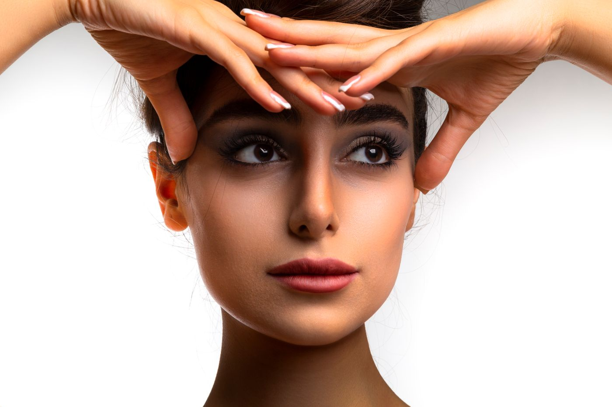
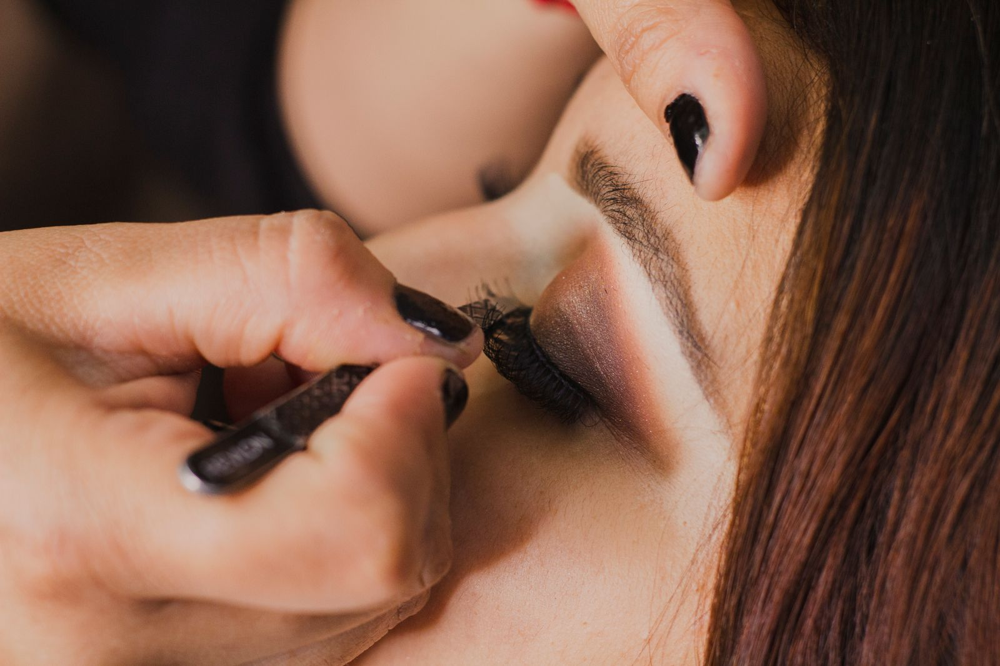
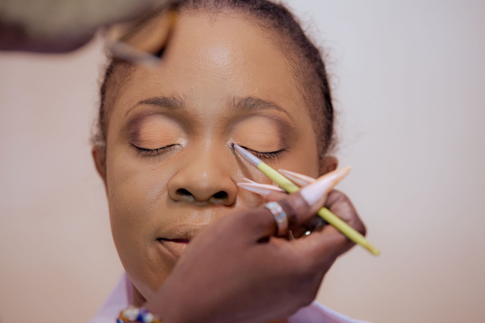
Makeup artist · Guatemala
Maquillaje creado para realzar quién eres y acompañarte en los momentos que recordarás siempre.
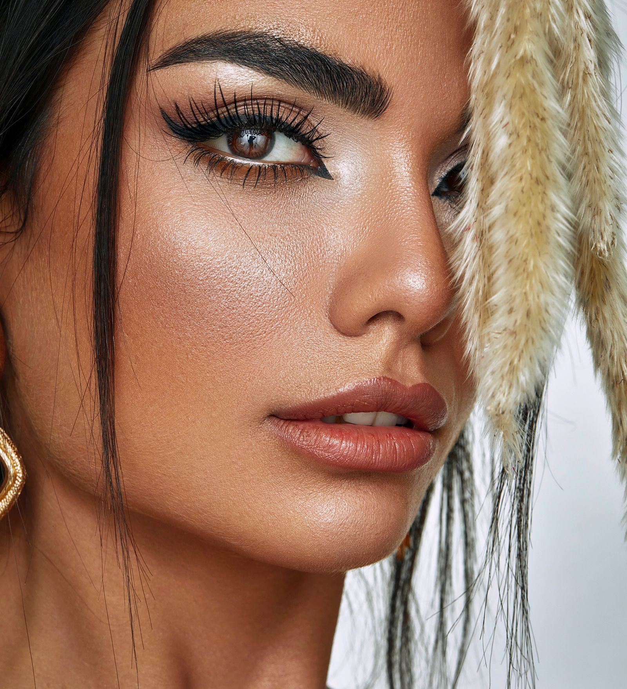
BEAUTY · BRIDAL · EDITORIAL
Desliza para descubrir ↓
El maquillaje no es una máscara.
Catálogo de looks
Explora cada estilo y agenda directamente el servicio que más se parece a ti.
Suave · Fresco · Luminoso
Una piel fresca y cuidada, tonos suaves y un acabado que realza tus facciones sin dejar de sentirte tú.
Agendar natural ↗


Romántico · Duradero · Atemporal
Un look elegante y resistente pensado para acompañarte desde la preparación hasta el último baile.
Agendar boda ↗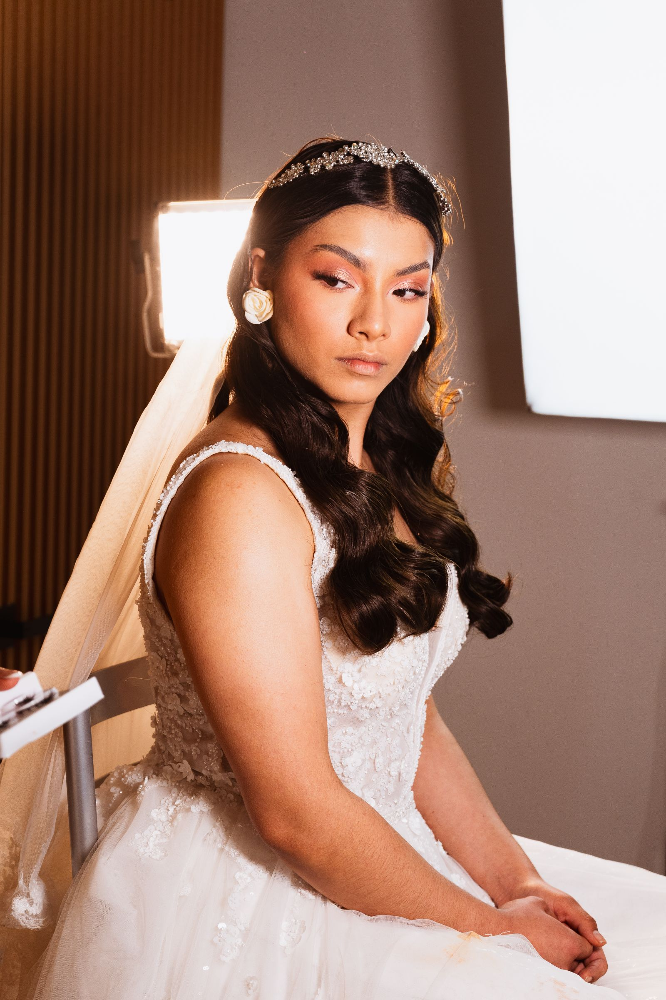
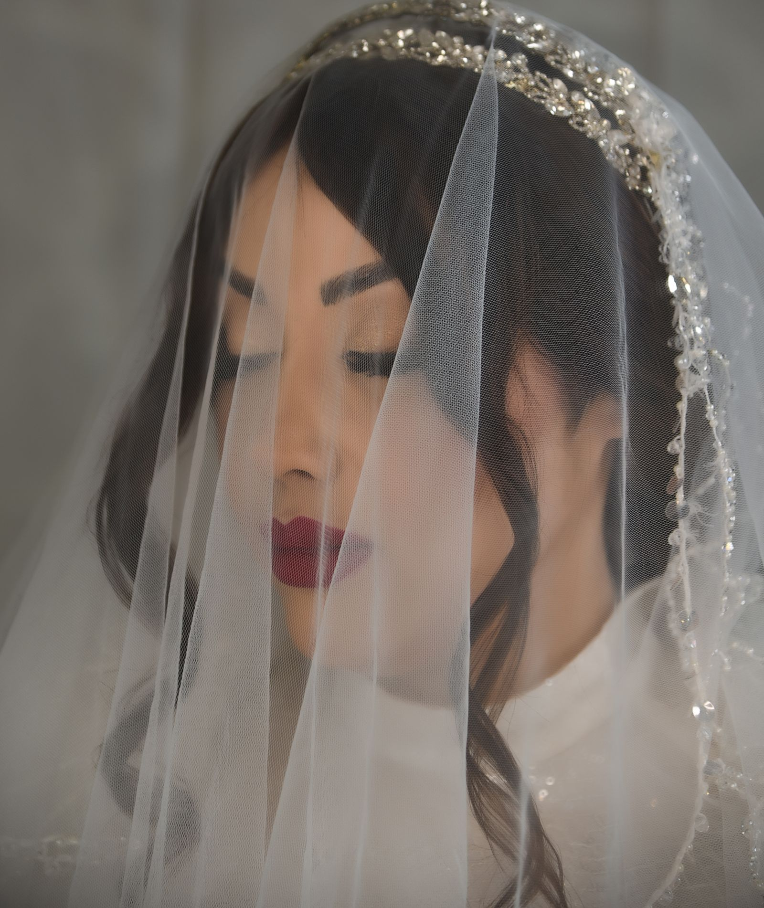
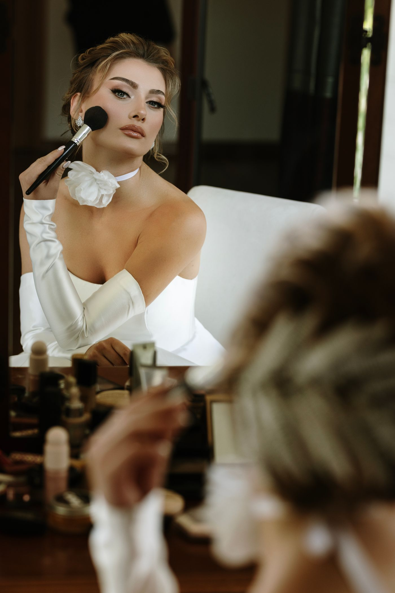
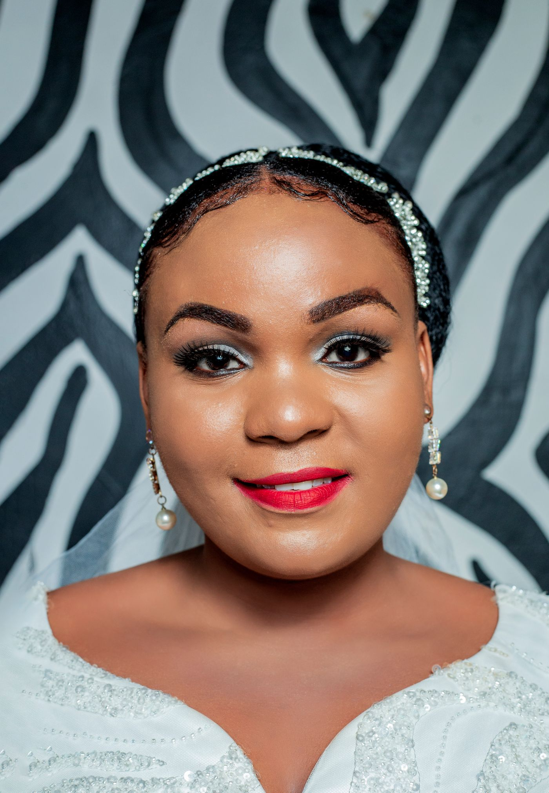
Juvenil · Radiante · Especial
Maquillaje juvenil, fotogénico y lleno de luz para celebrar uno de los días más especiales.
Agendar 15 años ↗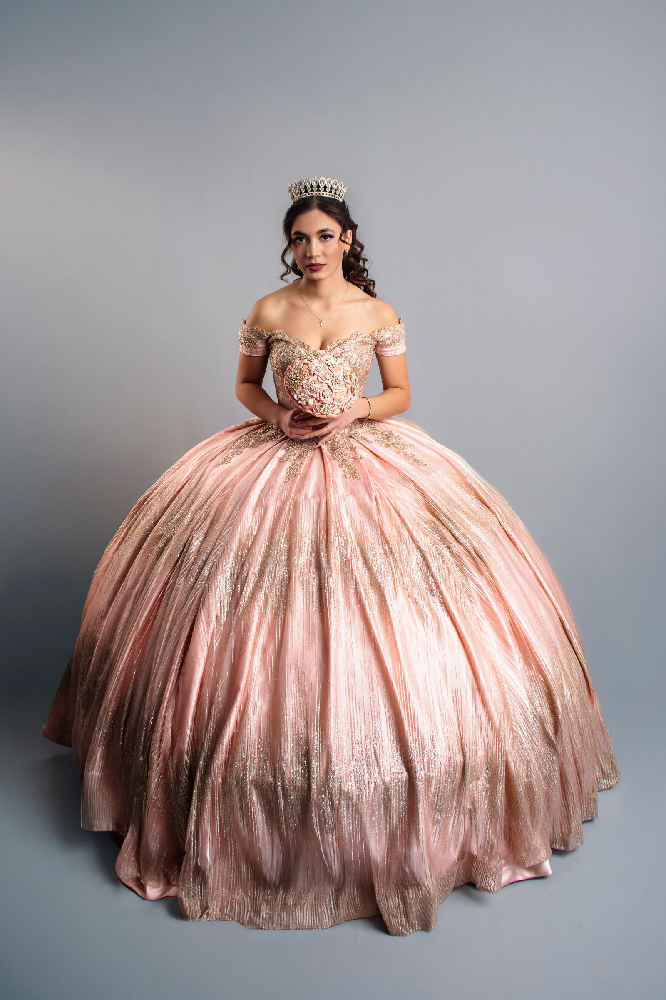
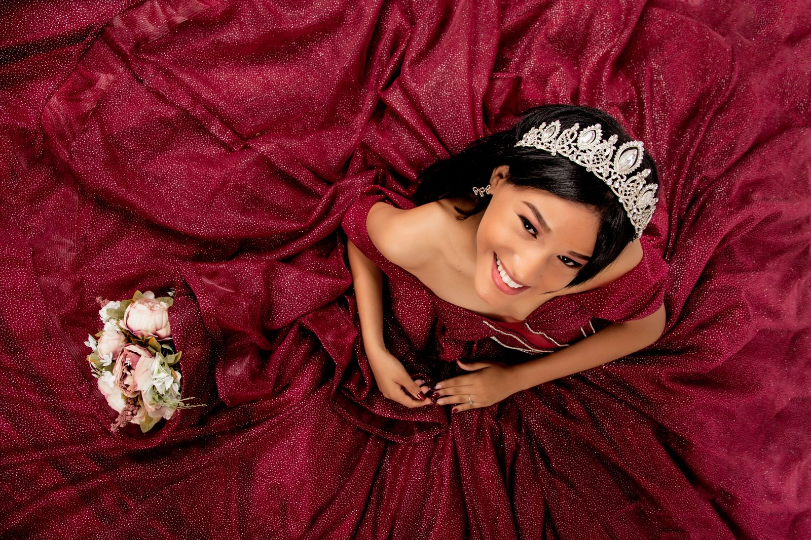
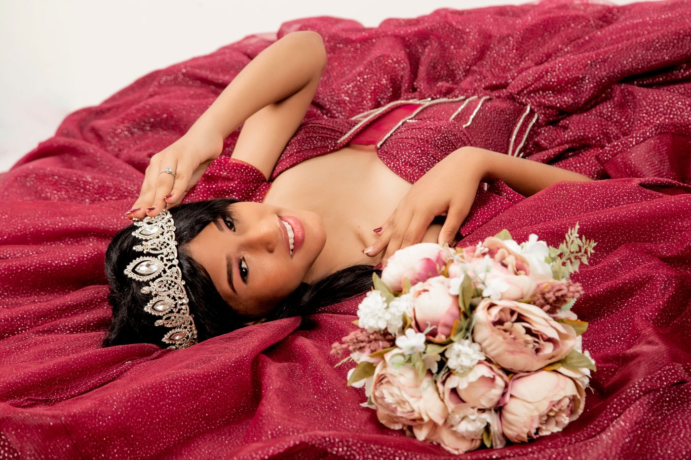
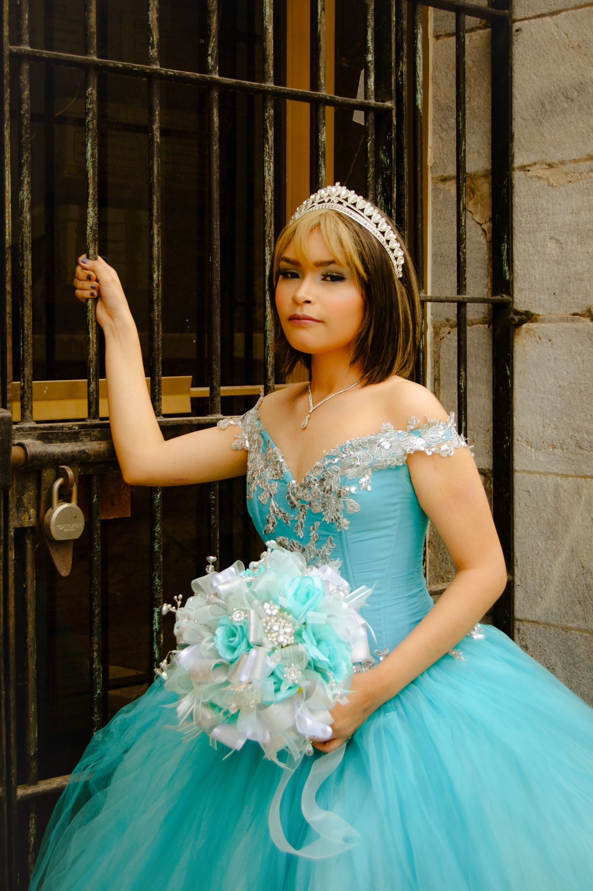
Pulido · Fotogénico · Moderno
Un acabado impecable para fotos, ceremonia y celebración, diseñado para durar durante todo tu logro.
Agendar graduación ↗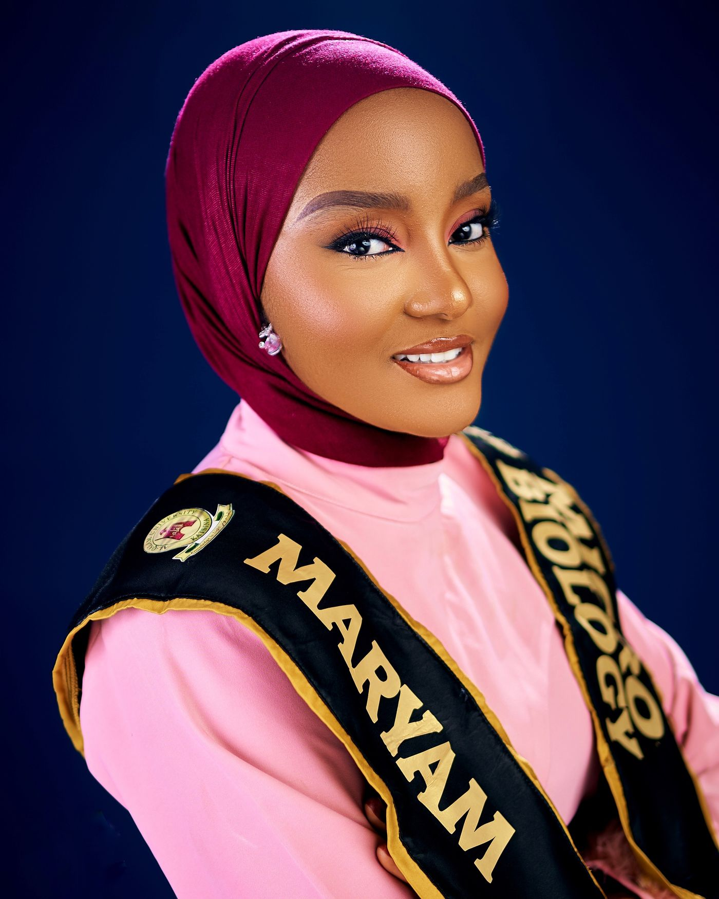
Hola, soy Lily
Creo en una piel que parezca piel, en escuchar antes de comenzar y en los pequeños detalles que hacen que un look se sienta auténtico.
Mi trabajo combina técnica, sensibilidad y calma para que disfrutes cada parte del proceso.
Belleza real
La experiencia Lily
Cuéntame la fecha, el evento y cómo quieres sentirte.
Definimos referencias, tonos y un look pensado para ti.
Relájate, disfruta el proceso y sal lista para tu momento.
Agenda tu cita
Elige tus preferencias y enviaremos la solicitud por WhatsApp para confirmar disponibilidad.
Reservas abiertas